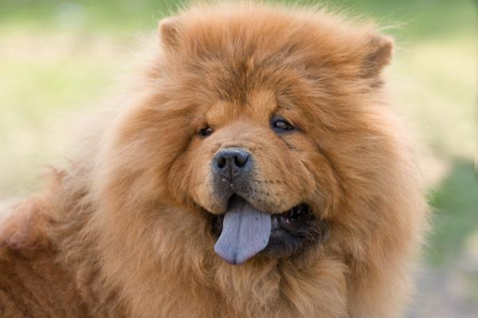

RAZA MEDIANA |
|
Border Collie Son perros muy observadores y muy cariñosos con su familia y conocidos, aunque algo más tímidos con los extraños. A sus cualidades hay que sumar que son perros sumamente respetuosos. Además, les gusta ser el líder de la manada. 
|
Chow Chow El Chow chow no es social, ni llevadero comúnmente. Tienden a mantener su distancia con los extraños y pueden ser agresivos con otros perros. El Chow chow es ferozmente protector y necesita entrenamiento para controlar su tendencia de ser guardian.  |